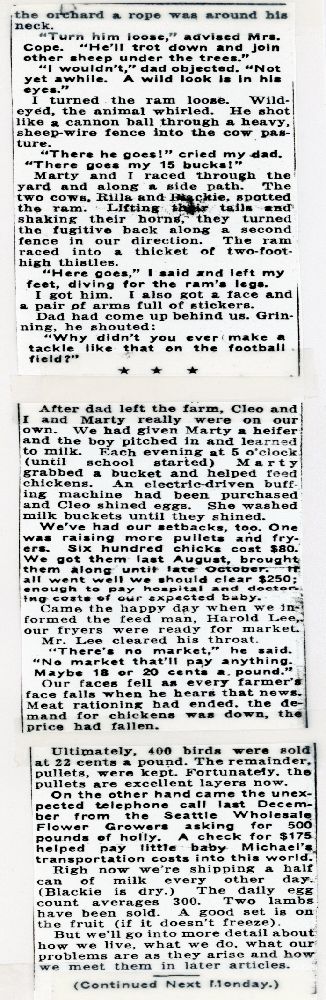
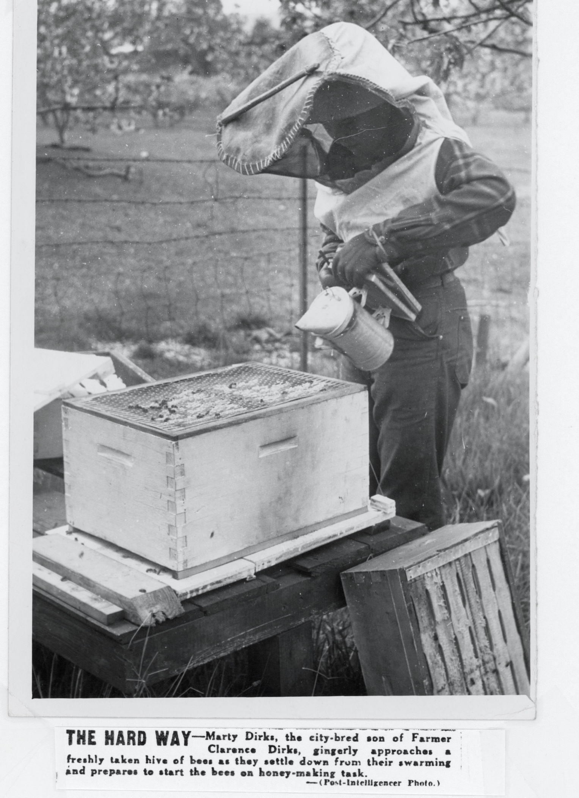
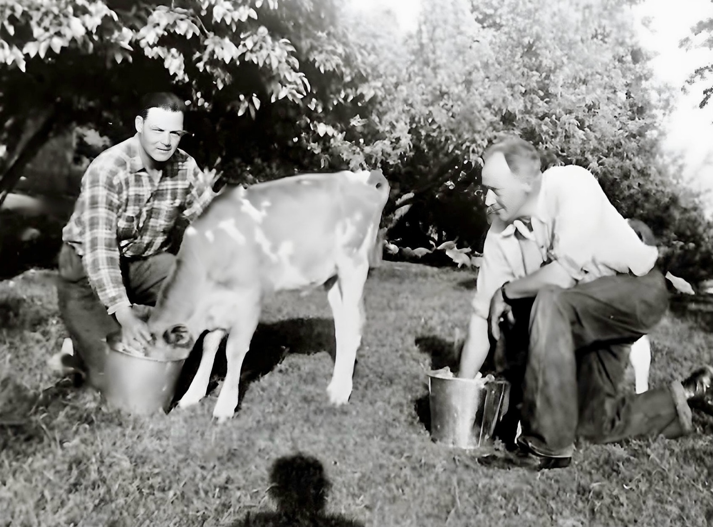
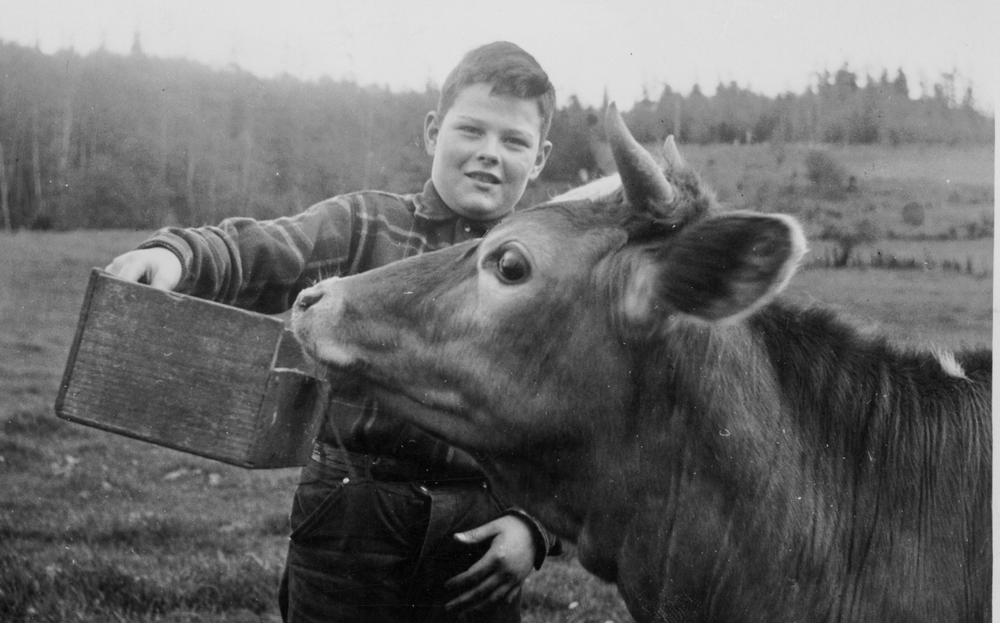

George Dirks, the City Bred Farmer’s father, traveled up from California to give his son a hand with his new venture. Although a ship caulker by trade, the elder Dirks had tried his hand at dairy faming when son Clarence was in elementary school. Although he was unable to turn a profit, George Dirks learned a lot about the trials and tribulations of raising cows and bringing milk to market.

Although only 12 years old, Marty Dirks is learning a lot about raising cows and especially milking them. Taught by his grandfather, George Dirks, young Marty was soon adept at the task his father was happy to let his son handle before heading off to school.